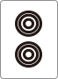
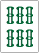
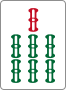

<html>
<head>
  <title>麻雀はじめの一歩</title>
  <link rel="stylesheet" href="../bower_components/Talkie/dist/talkie.min.css">
  <link rel="stylesheet" href="../bower_components/Talkie/dist/talkie-default.min.css">
  <link rel="stylesheet" href="../bower_components/highlightjs/styles/monokai_sublime.css">
  <style>
    img {
      text-indent: 0;
      width: 48px;
    }
  </style>
</head>
<body>

<script layout="cover"
        invert
        type="text/x-markdown"
        backface="./img/cover.jpg"
        backface-filter="blur(1px) brightness(.8)">
# 麻雀はじめの一歩

by [@1000ch](http://twitter.com/1000ch)

</script>
<script layout="title"
        type="text/x-markdown">

## 麻雀とは？

4人のプレイヤーがテーブルを囲み136枚あまりの牌を引いて手役を揃えるゲーム。
手役の難易度に応じて得点をやりとりし、最終的に持ち点が高い人が勝利する。

</script>
<script layout="title"
        type="text/x-markdown">

# 麻雀牌の種類

</script>
<script layout="title"
        type="text/x-markdown">

## 萬子 (マンズ)


</script>
<script layout="title"
        type="text/x-markdown">

## 筒子（ピンズ）


</script>
<script layout="title"
        type="text/x-markdown">

## 索子（ソーズ）


</script>
<script layout="title"
        type="text/x-markdown">

## 字牌（ツーパイ）


</script>
<script layout="title"
        type="text/x-markdown">

# ルールがわからない人が覚えるべき基本原則

</script>
<script layout="bullets"
        type="text/x-markdown">

## 基本原則1. アガリ形

- アガリ形は14枚である
- 手元に13枚、自摸って14枚という流れを繰り返し行う
- **雀頭(2枚1組)が1つ** ＋ **面子(3枚1組)が4つ** という内訳


<small>※いずれも特殊なケース(七対子・国士無双・四槓子・十三不塔など)を除く</small>

</script>
<script layout="bullets"
        type="text/x-markdown">

## 基本原則2. 面子の種類

- 雀頭（同じ牌が2つの組み合わせ）
    -  とか  とか
- 順子（同じ種類の牌で数字が3つ連続している組み合わせ）
    -  とか  とか
- 暗刻（同じ牌が3つの組み合わせ）
    -  とか  とか

</script>
<script layout="title"
        type="text/x-markdown">

## ここまでが最低限

何とか遊べる。でも、あがれない。

</script>
<script layout="bullets"
        type="text/x-markdown">

## アガるためには「役」が必要

- 牌の揃い方によって **役** が発生する
- 難易度が高ければ高い程、役の数は大きくなる
- 役は複合して発生することもある

ポーカーをイメージするとわかりやすいかも。ストレートとかフラッシュの役があって、複合していればストレートフラッシュになる、みたいな。

</script>
<script layout="title"
        type="text/x-markdown">

# ルールがわからない人が覚えるべき5つの役

</script>
<script layout="title"
        type="text/x-markdown">

## 立直（リーチ）

あと1手でアガリという状態（聴牌）で、宣言する

</script>
<script layout="title"
        type="text/x-markdown">

## 断么九（タンヤオ）


1と9と字牌を含めずにアガる

</script>
<script layout="title"
        type="text/x-markdown">

## 平和（ピンフ）


順子で構成し、両面待ちでアガる

</script>
<script layout="title"
        type="text/x-markdown">

## 七対子（チートイツ）


対子を7つ構成する

</script>
<script layout="title"
        type="text/x-markdown">

## 混一色（ホンイーソー）


萬子・筒子・索子いずれかと字牌で構成する

</script>
<script layout="bullets"
        type="text/x-markdown">

## ひとまずこの5つを覚えよう

- あとはひたすらゲームをやってみよう（MJとかハンゲーとか）
- ポン？チー？カン？そんなもんやらんでいい！
    - やりたい人はさっきの5つに加えて **翻牌** を覚えてからやってみよう
- ドラ？そんなもん気にしなくていい！（最初だけ）
- 点棒の数え方？そんなもん気にしなくていい！（最初だけ）

</script>
<script layout="cover"
        type="text/x-markdown"
        backface-filter="blur(1px) brightness(.8)">
## おしまい

[@1000ch](http://twitter.com/1000ch)

</script>

<script src="../bower_components/highlightjs/highlight.pack.js"></script>
<script src="../bower_components/Talkie/dist/talkie.min.js"></script>
<script>
  var talkie  = Talkie({
    wide: false,
    control: true,
    progress: true
  });

  talkie.next.plug(talkie.control.keydown('s'));
  talkie.next.plug(talkie.control.keydown('n'));
  talkie.prev.plug(talkie.control.keydown('a'));
  talkie.prev.plug(talkie.control.keydown('p'));

  window.Bacon = talkie.Bacon;

  talkie.next.plug(Bacon.fromEventTarget(document.getElementById('next'), 'touchend'));
  talkie.prev.plug(Bacon.fromEventTarget(document.getElementById('prev'), 'touchend'));

  window.next  = function() {
    talkie.next.push();
  };

  window.prev  = function() {
    talkie.prev.push();
  };

  window.jump  = function(num) {
    talkie.jump.push(num);
  };
</script>
</body>
</html>